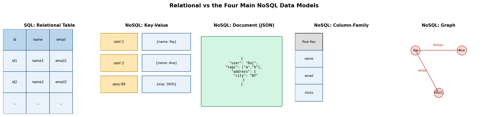
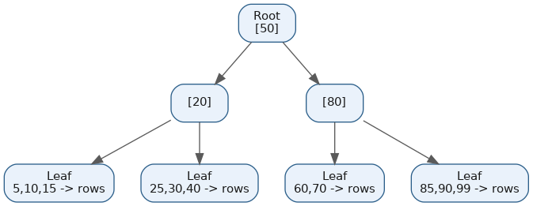
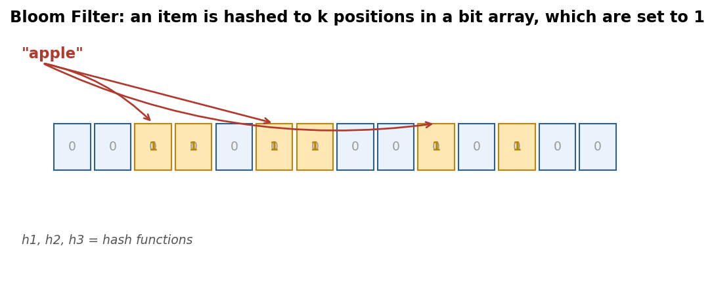

Databases, Indexes & Bloom Filters
Table of Contents
- Overview
- Introduction to Databases
- SQL Databases
- NoSQL Databases
- SQL vs. NoSQL
- ACID vs. BASE Properties
- Real-World Examples and Case Studies
- SQL Normalization and Denormalization
- In-Memory Database vs. On-Disk Database
- Data Replication vs. Data Mirroring
- Database Federation
- What Are Indexes?
- Types of Indexes
- Introduction to Bloom Filters
- Benefits & Limitations
- Variants and Extensions
- Applications of Bloom Filters
- Common Interview Questions
- Key Takeaways
Overview
Every application needs somewhere durable to keep its data — user accounts, orders, chat messages — and it needs that data to survive crashes, come back quickly, and stay consistent even when thousands of people are hitting it at once. The software responsible for that is a Database Management System (DBMS), and the biggest design fork in the road is which family of database to build on: the decades-old relational (SQL) model, or one of the newer NoSQL models that traded some of SQL's rigidity for flexibility and horizontal scale. This page walks through that choice, the guarantees each side offers, how to reorganize data inside a relational schema, and then two auxiliary structures that make data access fast and cheap at scale: indexes and Bloom filters.
Introduction to Databases
A database is an organized collection of data that a program can store, retrieve, and update reliably. Almost every application — a banking app, an online store, a food delivery app — needs a durable place to keep information that survives crashes, can be retrieved quickly, and stays consistent under concurrent use. The DBMS is the software layer that manages that storage and retrieval; MySQL, PostgreSQL, MongoDB, and Redis are all examples.
For decades the dominant model was the relational database, organizing data into tables of rows and columns (much like a spreadsheet) with strict rules about data types and relationships, built around SQL (Structured Query Language). It thrived because early business applications had clearly structured data — customers, orders, products — and needed strong guarantees that a transaction like transferring money between two accounts would either fully complete or not happen at all.
As the internet scaled up, applications like Facebook, Amazon, and Google needed to handle huge volumes of unstructured data (photos, logs, social graphs) and traffic from millions of concurrent users, and the rigid, single-server nature of traditional relational databases became a bottleneck. That gave rise to "NoSQL" ("not only SQL") databases in the mid-2000s and 2010s, which trade away some of the structure and guarantees of relational systems in exchange for flexibility and the ability to scale across many machines. Most real-world systems today use both together: relational databases for data that needs strong consistency (payments, inventory) and NoSQL databases for data that needs to scale fast or has a shape that changes often (chat messages, catalogs, session data, social graphs).
SQL Databases
SQL (relational) databases store data in tables: each table represents one type of entity (a users table, an orders table), each row is one record, and each column is an attribute with a fixed data type. Every table has a schema defined ahead of time — the columns and their types are decided up front, and every row must conform. Tables connect to each other through primary keys (a column that uniquely identifies a row, like user_id) and foreign keys (a column in one table pointing at another table's primary key), which is how relational databases model relationships, such as linking an orders table back to the users table that placed those orders.
The "SQL" itself is the query language used to define, read, and modify data — statements like SELECT, INSERT, JOIN, and UPDATE. Because tables can be joined on shared keys, SQL databases excel at answering complex questions that span multiple entities in one query, and they enforce data integrity through constraints ("this field can never be empty," "this foreign key must point at a row that actually exists"). Popular examples include MySQL (Facebook, WordPress), PostgreSQL (Instagram, Apple, Spotify, Reddit, Notion, Discord), Oracle Database (banking and telecom, including AT&T), and Microsoft SQL Server. SQL databases remain the natural choice for financial transactions, inventory systems, and anything where relationships and accuracy matter more than raw write throughput.
NoSQL Databases
NoSQL databases were built to solve the problems relational databases struggle with: handling huge data volumes, scaling across hundreds of cheap servers instead of one expensive one, and storing data whose shape changes often or doesn't fit neatly into rows and columns. "NoSQL" is really an umbrella term covering several distinct data models, each suited to different problems. The four major families are:
- Key-value stores — the simplest model: every item is just a key paired with a value, like a giant dictionary. No schema is required and lookups by key are extremely fast. Redis and Amazon DynamoDB are common examples, typically used for caching, session storage, and real-time leaderboards.
- Document databases — store data as flexible, JSON-like documents that can nest fields and arrays, and different documents in the same collection don't need identical fields. MongoDB and Couchbase are the leading examples, often used for content management, catalogs, and user profiles where the data shape varies or evolves.
- Column-family (wide-column) stores — organize data into column families rather than fixed rows, designed for very high write throughput and horizontal scale. Apache Cassandra and HBase are the classic examples, commonly used for time-series data, IoT sensor data, and chat/message history.
- Graph databases — model data explicitly as nodes (entities) and edges (relationships), optimized for traversing connections. Neo4j and Amazon Neptune are common examples, used for social networks, fraud detection, and recommendation engines.
Because most NoSQL databases don't require a fixed schema, they can ingest data in its native shape and adapt as an application's needs change, and because they're designed from the ground up for distributed operation, they typically scale horizontally (more machines) rather than vertically (a bigger machine). The trade-off is that most relax some of the strict consistency guarantees relational databases provide — covered next under ACID vs. BASE.

SQL vs. NoSQL
The real difference between SQL and NoSQL comes down to a handful of trade-offs: how rigid the schema is, how the system scales, and how strictly it enforces consistency. Neither is strictly "better" — the right choice depends on the shape of the data and how the application needs to grow.
| Dimension | SQL (Relational) | NoSQL |
|---|---|---|
| Schema | Fixed, defined upfront | Flexible/dynamic, can evolve per record |
| Data model | Tables with rows/columns, joined via keys | Key-value, document, column-family, or graph |
| Scaling | Typically vertical (bigger server) | Typically horizontal (more servers) |
| Consistency | Strong (ACID) | Often eventual (BASE), tunable in some systems |
| Query language | SQL, supports complex joins | Varies by product; often simpler APIs |
| Great for | Financial data, inventory, anything needing strict relationships | High-volume writes, unstructured data, rapid scale |
| Examples | MySQL, PostgreSQL, Oracle, SQL Server | MongoDB, Cassandra, Redis, DynamoDB, Neo4j |
In practice, the lines between the two camps have been blurring. Modern PostgreSQL supports a jsonb column type that lets you store and query flexible JSON documents inside a relational database, plus extensions like pgvector for vector/embedding search — meaning a single Postgres instance can now absorb workloads that used to require a separate NoSQL system. Most production systems in 2026 use a hybrid approach: a relational database for the core transactional data that must never be inconsistent (payments, orders), paired with one or more NoSQL databases for caching, session storage, search, or high-write-volume data like chat and activity logs.
This page covers the conceptual SQL-vs-NoSQL trade-off; for deep per-product profiles of specific SQL and NoSQL engines (relational, document, key-value/column, graph, NewSQL, time-series, search, and more), see the dedicated Database Types section.
ACID vs. BASE Properties
ACID and BASE are two different philosophies about what guarantees a database makes when data is written and read, and they roughly map to the SQL and NoSQL worlds respectively (with exceptions on both sides).
ACID stands for Atomicity, Consistency, Isolation, and Durability — the traditional guarantee relational databases provide for transactions (a group of operations treated as a single unit, like "debit account A and credit account B"):
- Atomicity — a transaction either completes entirely or doesn't happen at all; there's no half-finished state.
- Consistency — a transaction can only move the database from one valid state to another, never violating defined rules such as a foreign key constraint.
- Isolation — concurrent transactions don't interfere with or see each other's incomplete work.
- Durability — once a transaction is committed, it stays saved even if the system crashes immediately after.
BASE stands for Basically Available, Soft state, Eventually consistent — the looser guarantee many distributed NoSQL databases favor to stay fast and available even when parts of the system are down or the network is unreliable:
- Basically Available — the system always tries to respond, even if the response isn't the freshest possible data.
- Soft state — data may be in flux and can change over time even without new input, since updates are still propagating.
- Eventually consistent — if no new updates arrive, all copies of the data will eventually converge, just not necessarily instantly.
| Aspect | ACID | BASE |
|---|---|---|
| Priority | Consistency and correctness | Availability and speed |
| Typical systems | MySQL, PostgreSQL, Oracle | Cassandra, DynamoDB, many document/key-value stores |
| Best for | Banking, payments, inventory | Social feeds, chat, analytics, shopping carts |
| Failure behavior | May reject a request rather than risk incorrect data | Keeps responding, may briefly return stale data |
Choosing between them really comes down to the cost of being wrong: if showing a slightly stale "like count" for a few seconds is harmless, BASE is a great trade for scale and speed; if double-charging a customer's card is unacceptable, you need ACID.
Real-World Examples and Case Studies
Instagram — scaling PostgreSQL with sharding instead of switching to NoSQL. In 2012, Instagram was ingesting hundreds of millions of photos and rapidly outgrowing a single PostgreSQL server. Rather than rewriting everything on a NoSQL database, its engineers sharded their existing Postgres database — dividing data across thousands of logical shards (implemented as Postgres schemas), each of which could later move onto its own physical server as the company grew, without changing application code. They paired this sharded Postgres setup with Memcache for read caching and Redis to track which shard a given photo lived on. The lesson: a relational database can scale a very long way if you're willing to shard it — you don't always need to abandon SQL for massive scale. Uber took a related but different path: it also started on a Postgres-backed monolith, but by 2014 was hitting fundamental limits on write throughput and shard management, so it built "Schemaless," a custom sharding layer on top of MySQL — showing that even relational-first companies sometimes build custom infrastructure at extreme scale.
Discord — using Cassandra for chat history. Discord needed to store and serve trillions of chat messages with very high write volume and the ability to add capacity by simply adding servers. It chose Apache Cassandra because its column-family model partitions data by key (e.g., by channel), so all of a channel's messages land together, and because Cassandra has no single leader server, letting it scale linearly and stay available even if nodes fail. Discord accepted Cassandra's eventual consistency (a BASE trade-off) because a chat message appearing a fraction of a second late on some replicas is a non-issue, whereas losing write throughput would not be. As scale grew past 177 Cassandra nodes and trillions of messages, the operational cost of managing that many nodes grew painful, so Discord later migrated to ScyllaDB — a Cassandra-compatible database with a different internal engine — cutting node count dramatically and improving latency, illustrating that database choices need to keep evolving as scale changes.
Redis as a session store. Many web applications need to remember that a user is logged in across many requests, potentially handled by different application servers behind a load balancer. Storing session data in one server's memory breaks as soon as the next request lands on a different server. Redis, an in-memory key-value store, solves this by acting as a shared, sub-millisecond storage layer every application server can read and write — the browser just holds an opaque session ID in a cookie, while the actual session data lives in Redis, which also supports automatic key expiration, a perfect fit for sessions that should log out after inactivity. It's a textbook case of matching a key-value NoSQL store to a narrow, latency-sensitive, high-read/write use case rather than using it as a general system of record.
SQL Normalization and Denormalization
Normalization is the process of organizing a relational database's tables to reduce data redundancy (the same fact stored in more than one place) and prevent anomalies during inserts, updates, or deletes. It works by splitting data into multiple related tables connected by primary and foreign keys, so each fact lives in exactly one place. This is typically described through "normal forms": First Normal Form (1NF) requires every column hold a single, atomic value (no lists crammed into one field); Second Normal Form (2NF) requires every non-key column depend on the entire primary key (relevant when a table has a composite key); Third Normal Form (3NF) requires non-key columns depend only on the primary key, not on each other. A normalized design might keep a customer's address in a single addresses table rather than repeating it on every order row, so a house move only requires one update.
Denormalization is the opposite move: intentionally combining tables or duplicating data to reduce the joins a query needs, speeding up reads at the cost of extra storage and the risk that duplicated data drifts out of sync if it isn't updated everywhere it appears. A denormalized design might store a customer's name directly on each order row so a report can be generated without joining to the customers table at all.
| Aspect | Normalization | Denormalization |
|---|---|---|
| Goal | Eliminate redundancy, protect data integrity | Reduce joins, speed up reads |
| Storage | More space-efficient | More storage used (duplicated data) |
| Writes | Simple, consistent (update one place) | Riskier (must update every duplicate) |
| Reads | Can require multiple joins, potentially slower | Fast, fewer joins |
| Best for | Transactional systems (banking, inventory) | Read-heavy systems, reporting, dashboards |
In practice, most real systems start normalized by default — since it keeps data correct and easy to reason about — and then selectively denormalize specific tables or add caching once profiling shows a particular query path is a bottleneck. This "normalize first, denormalize for measured pain points" approach avoids both the anomalies of under-normalization and the premature complexity of over-engineering for speed you don't yet need.
In-Memory Database vs. On-Disk Database
An in-memory database keeps its primary copy of data in RAM rather than on disk, which is what lets it deliver latencies in the microsecond to sub-millisecond range — orders of magnitude faster than disk-based systems, since it avoids the disk I/O that's usually the biggest bottleneck. Redis and Memcached are the two most common in-memory stores: Memcached is purely a cache with no durability (a restart loses everything), while Redis can optionally persist data to disk in the background (snapshotting or an append-only log of writes) so it can recover its dataset after a restart, even though it still primarily serves reads and writes from RAM.
An on-disk database, like PostgreSQL, MySQL, or Oracle, stores data permanently on disk and only caches the most frequently accessed portions in memory — every write is guaranteed to persist through a crash, at the cost of higher latency than a pure in-memory system. Some systems blur the line: SAP HANA is described as an "in-memory database" because it does most processing in RAM for speed, but it still writes to disk by default for durability, combining fast in-memory operations with the safety of persistent storage.
| Aspect | In-Memory Database | On-Disk Database |
|---|---|---|
| Primary storage | RAM | Disk (SSD/HDD), cached in RAM |
| Latency | Microseconds to sub-millisecond | Milliseconds (higher, disk-bound) |
| Durability | Varies — none (Memcached), optional (Redis), by default (SAP HANA) | Guaranteed by default |
| Cost | RAM is more expensive per GB | Disk is cheaper per GB |
| Examples | Redis, Memcached, SAP HANA | PostgreSQL, MySQL, Oracle |
| Best for | Caching, session stores, real-time leaderboards, rate limiters | System-of-record data that must survive crashes |
The practical rule of thumb: reach for an in-memory database when latency is the dominant constraint and the data is either disposable (a cache) or small enough to affordably persist (sessions, counters, leaderboards); use an on-disk database when the data must be your permanent, authoritative source of truth.
Data Replication vs. Data Mirroring
Data replication means keeping multiple copies of data across different database servers, where every node can be an active participant — commonly, one primary server accepts writes while multiple replicas handle read traffic, and in some multi-master setups more than one node can accept writes. Replication is primarily used for scalability and load distribution: spreading read queries across replicas reduces load on any single server, and if a server holding part of the data goes down, the system can often keep functioning because data and workload are spread out. Replication doesn't require perfectly instantaneous copies — many schemes are asynchronous, meaning replicas can lag slightly behind the primary.
Data mirroring, by contrast, is about maintaining one complete, close-to-real-time backup copy of an entire database on a separate server, specifically to support fast failover if the primary fails — at any moment, only the primary actively serves traffic while the mirror stands by. Mirroring typically applies updates to the mirror without delay, prioritizing minimal data loss during failover over load distribution, and it generally doesn't support spreading data across many independent nodes the way replication-based sharding does.
| Aspect | Replication | Mirroring |
|---|---|---|
| Purpose | Scalability, load balancing, availability | High availability, fast failover |
| Active servers | Multiple servers can serve traffic | Only the primary is active; mirror is standby |
| Data scope | Table/schema level, can be partial | Entire database copied |
| Best for | Read-heavy, distributed workloads | Disaster recovery, minimal-downtime failover |
Put simply: replication is about spreading a workload across many living copies, while mirroring is about having one faithful backup ready to instantly take over if the primary dies.

Database Federation
Database federation splits a single large database into several smaller, independent databases organized by function — for example, one database for user accounts, another for the product catalog, another for orders — rather than one giant database holding every table. A federation (or "middleware") layer sits in front of these independent databases and lets applications query them as if they were a single unified system, decomposing an incoming query into the right sub-queries for each underlying database and stitching the results back together, without physically moving or duplicating the underlying data.
The key distinction between federation and sharding is that federation splits data by function or subject area, while sharding splits data of the same table by a partitioning key (like user ID) across multiple identical-structure databases. Federation is attractive because each functional piece can be scaled, tuned, and even hosted on a different database engine independently — the orders database might need strong ACID guarantees while the logging database might be a NoSQL store optimized for writes — but it adds complexity: queries that need to join data across functional boundaries (say, a report combining user data and order data) can no longer be done with a single simple SQL join, and now require the application or federation layer to combine results from multiple sources.
What Are Indexes?
A database index is an auxiliary data structure that lets the database find rows matching a query without scanning every row in a table — the classic analogy is the index at the back of a textbook: instead of reading every page to find mentions of "photosynthesis," you look it up in the index and jump straight to the right pages. Without an index, a query like "find the user with email X" forces a full table scan, checking every row one by one, which becomes painfully slow as a table grows to millions or billions of rows.
An index is built on one or more columns and stores a sorted or otherwise organized reference to where each value's corresponding rows live, so lookups, range searches, or sorting operations on those columns can be done in a fraction of the time a full scan would take. Indexes aren't free: every index must be updated whenever a row is inserted, updated, or deleted, which slows down writes and consumes extra disk space — so choosing which columns to index (usually the ones queried most often, especially in WHERE, JOIN, and ORDER BY clauses) is an important performance decision rather than something to do indiscriminately.
Types of Indexes
Different query patterns benefit from different index structures, and most production databases like PostgreSQL and MySQL support several types side by side:
- B-Tree index — the default and most common index type in nearly every relational database (MySQL, PostgreSQL, Oracle, SQL Server all default to it). A B-Tree (technically usually a B+ Tree) keeps keys sorted in a balanced, multi-level tree structure, allowing both exact-match lookups and range queries (like "find all orders between two dates") in roughly logarithmic time — lookup time grows very slowly even as the table grows enormously.
- Hash index — built on a hash table, where a hash function converts a key into a fixed-size code used to find its bucket almost instantly. Extremely fast for pure equality lookups ("find the row where id = 5") but can't handle range queries or sorting at all. PostgreSQL supports hash indexes directly; MySQL's InnoDB engine doesn't expose them as a user-facing option but uses an internal "adaptive hash index" automatically for frequently accessed data.
- Bitmap index — represents each distinct value in a column as a bit array marking which rows have that value, working extremely well for low-cardinality columns (like "gender" or "order status") and heavily used in Oracle and data-warehouse/analytics systems, though a poor fit for columns with many unique values or heavy write traffic.
- Composite (multi-column) index — an index built across more than one column together, useful when queries commonly filter or sort by the same combination of columns (an index on
(user_id, created_at)speeds up "find this user's most recent orders"). - Full-text index — specialized for natural-language search inside text fields (finding documents containing certain words, ranked by relevance) rather than exact or ranged matching. PostgreSQL implements this through
tsvectorcolumns combined with a GIN (Generalized Inverted Index); MySQL offers a dedicated FULLTEXT index type.

Introduction to Bloom Filters
A Bloom filter is a probabilistic data structure used to test whether an element is a member of a set, built to answer that question extremely fast while using far less memory than storing the actual set would require. "Probabilistic" means the answer isn't always perfectly certain — a Bloom filter can occasionally say an item "might be in the set" when it actually isn't (a false positive), but it will never say an item is "definitely not in the set" when it actually is (a false negative).
Structurally, a Bloom filter is just a bit array (a fixed-length string of bits, all starting at 0) plus a small number of independent hash functions, each deterministically converting an input into a position in the array. To add an item, you run it through each of the k hash functions to get k positions, and set the bit at each position to 1. To check membership, you run the item through the same k hash functions and check the bits at those positions: if even one is 0, the item is definitely not in the set (no false negatives are possible); if all are 1, the item is probably in the set, though it's possible those bits were set to 1 by other items whose hashes collided at the same positions (this is what causes a false positive).
The false positive rate depends on three things: how many items have been added, how large the bit array is, and how many hash functions are used. A bigger bit array or fewer stored items lowers the false positive rate, while more hash functions help up to a point but can start hurting once the array gets too full of 1s. Engineers tune these parameters ahead of time based on the expected number of stored items and how much false-positive risk they can tolerate.

Benefits & Limitations
The core benefit of a Bloom filter is its incredible space efficiency: unlike a hash table or a full list, which needs memory proportional to the actual size and content of the data being stored, a Bloom filter of a fixed size can represent a set of an arbitrarily large number of items using only a small, constant amount of memory (with the trade-off that the false positive rate creeps up as more items are added). Lookups and insertions are also extremely fast, taking constant time regardless of how many items are in the set, since each operation only touches a small, fixed number of hash-derived positions. And critically, the guarantee of no false negatives means a Bloom filter can always be trusted to correctly rule an item out — exactly the property most real-world uses rely on.
The limitations follow directly from how it's built. False positives are unavoidable and increase as more elements are inserted — the filter never gets more accurate over time, only less, unless rebuilt larger. A standard Bloom filter cannot store or retrieve the actual items, and it cannot tell you how many times an item was added — it can only answer yes/no membership questions. It also does not support deletion: because multiple items can share the same bit positions, flipping a bit back to 0 to "remove" one item risks silently breaking the membership test for other items that also depended on that bit. And because accuracy is tied to the array size chosen upfront relative to the expected data volume, a standard Bloom filter can degrade badly if it ends up holding far more items than it was originally sized for.
Variants and Extensions
Because the original design can't handle deletions or dynamic growth well, several variants have been developed to fill those gaps:
- Counting Bloom filter — instead of a single bit per position, each position stores a small counter. Adding an item increments the relevant counters, and removing an item decrements them, finally making deletion possible (as long as counters don't overflow), at the cost of more memory than a plain bit array.
- Cuckoo filter — a more modern alternative that stores a small "fingerprint" of each item (a short hash) in one of two possible bucket locations, borrowing from cuckoo hashing (if both candidate buckets are full, it "kicks out" an existing fingerprint to its alternate bucket to make room). Cuckoo filters support deletion, are often more space-efficient than Bloom filters at comparable false-positive rates, and tend to perform especially well at lower capacities, though very high-throughput workloads can still favor Bloom filters.
- Scalable Bloom filter — addresses not knowing the eventual size of a data set in advance by starting with one Bloom filter layer and adding new layers (each typically larger and/or with a tighter false-positive target) as the data set grows, keeping the overall false-positive rate bounded even as the number of stored items keeps increasing.
- Other variants worth knowing by name: Stable Bloom filters (for continuous, unbounded data streams where old items are allowed to "age out"), quotient filters (trade some lookup speed for better space efficiency and easier resizing), and d-left counting Bloom filters (a more compact version of the counting variant).
Applications of Bloom Filters
Bloom filters show up throughout real production infrastructure wherever a system needs to cheaply rule out "definitely not here" before paying the cost of an expensive lookup:
- Cassandra and HBase keep a Bloom filter for every on-disk data file (SSTable). Before doing a slow disk read to check whether a key exists in a given file, the database first checks that file's Bloom filter; a "definitely not present" answer lets it skip that file entirely, dramatically cutting down unnecessary disk I/O across large, sharded datasets.
- Google Chrome's Safe Browsing feature historically checked every visited URL against a local Bloom filter of known-dangerous sites before deciding whether to make a network call to Google's full, authoritative list. A "not present" result meant the site was treated as safe with zero network round-trip; a rare "might be present" result triggered a real check against the full list.
- Akamai's CDN uses a Bloom filter to track whether a piece of content has been requested before, and only caches it once seen a second time — filtering out "one-hit wonders" that would otherwise waste valuable cache space, reportedly freeing up a large share of Akamai's cache capacity.
- Bitcoin uses Bloom filters in its Simplified Payment Verification (SPV) protocol, letting lightweight wallet clients that don't store the entire blockchain ask full nodes "does this filter match any transactions relevant to me?" without revealing exactly which addresses they care about, saving massive amounts of bandwidth and storage on resource-constrained devices.
- Other everyday uses include recommendation systems (Medium reportedly uses Bloom filters to avoid re-recommending articles a user has already read) and spell-checkers or duplicate-detection systems that need to cheaply check "have I seen this before?" at huge scale.